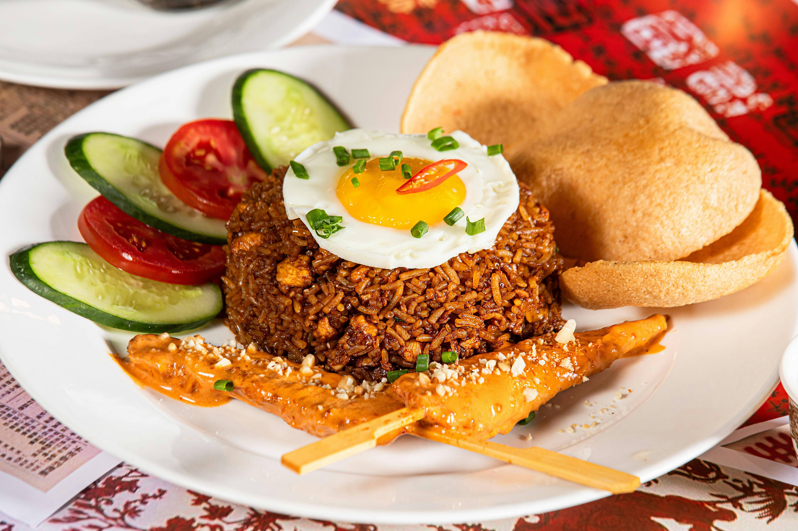

Home
Nasi Goreng

Nasi goreng adalah hidangan nasi yang digoreng bersama bumbu dasar, kecap manis, dan berbagai pilihan lauk pendamping
Resep Simple Nasi Goreng Spesial
Bumbu Halus (untuk 2 porsi)
- 4 siung bawang merah
- 2 siung bawang putih
- 3 buah cabai merah keriting (sesuai selera)
- 1 butir kemiri sangrai
- Sedikit terasi bakar (opsional)
Bahan Utama & Pelengkap
- 2 piring nasi putih (terbaik gunakan nasi dingin/sisa semalam)
- 2 butir telur (satu diorak-arik, satu dicaplok/dadar)
- 50 gram ayam suwir atau bakso sapi diiris tipis
- 2 sdm kecap manis
- 1 sdm saus tiram
- 1 sdt garam
- 1/2 sdt kaldu bubuk
- 1 batang daun bawang, iris tipis
- Minyak goreng secukupnya
Langkah memasak
- Tumis bumbu: Panaskan minyak. Tumis bumbu halus hingga harum dan matang.
- Masak lauk: Sisihkan bumbu di tepi wajan. Masukkan telur, buat orak-arik. Tambahkan ayam dan bakso. Aduk rata.
- Masukkan nasi: Tambahkan nasi putih. Besarkan api kompor.
- Beri bumbu: Tuang kecap manis, saus tiram, garam, dan kaldu bubuk. Aduk cepat hingga semua nasi berubah warna merata.
- Penyelesaian: Taburkan daun bawang. Aduk sebentar, lalu angkat.
- Sajikan: Hidangkan hangat dengan telur ceplok, kerupuk, dan irisan mentimun.
Tips Nasi Goreng Anti Lembek
- Gunakan nasi pera: Nasi yang agak kering dan tidak pulen menghasilkan tekstur terbaik.
- Gunakan api besar: Teknik ini memberikan aroma "smoke" atau gosong khas restoran yang sedap.